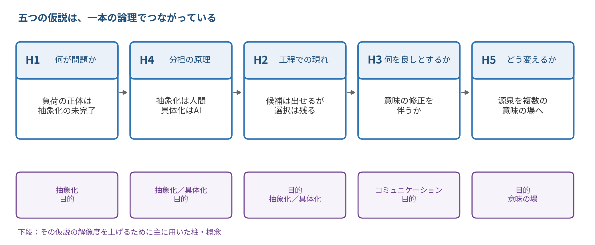

hypothesis
五つの仮説
分析の軸から立てられた命題群
研究の目的
本研究は、その新しい要求工学の姿を描き、技術者が働きがいを持ちながら価値創出に集中できる未来を設計する挑戦である。
この一文が、以下すべての仮説の上位にあります。五つの仮説は、この目的を達成するために解かれるべき問いを分解したものです。
このページが扱わないこと
ここは仮説命題の記述にとどめています。それをどう実証するか、どのような方法で証明するかについては述べていません。 命題を先に確定させ、方法をあとから考える。この順序を守ることが、都合のよい方法に合わせて命題を歪めることを防ぎます。
五つの仮説の順序
五つは並列に並んだ項目ではなく、一本の論理でつながっています。 以下では番号順（H1、H2、H3、H4、H5）に記述しますが、論理の順序は次のようになります。

H1 が問題の所在を特定し、H4 が分担の原理を与え、H2 がそれを工程に適用し、 H3 が何をもって良しとするかの基準を与え、H5 が根本的な処方箋を述べます。
附番の規則
| 附番 | 意味 |
|---|---|
| H1 〜 H5 | 主命題。分析の軸ごとに一つ。その軸で主張したいことの中核 |
| H1-a, H1-b, … | 下位命題。主命題を構成する、より細かい主張。単独でも真偽を問える |
| 新 | 原文にはなく、三本柱によって新たに導かれた命題 |
番号は今後変更しない方針です。命題を追加する場合は末尾に付け足し、削除する場合も番号を再利用しません。 これによって、過去の議論との対応が保たれます。
現在の登録数：主命題 5 件／下位命題 30 件（うち新規 19 件）
H1：SEの心理的負荷はどこに集中しているか
原資料より
仮説：仕事の本質は、「技術的難易度」ではなく、「認知負荷」にある。
ユーザは要求を知らない！
曖昧な要求、書かれたものが不在、システム境界不明など
システムエンジニアが要求定義工程において経験する心理的負荷の主要な決定要因は、実装技術の難易度ではなく、抽象化が未完了であることに起因する認知負荷である。
認知負荷とは、抽象化が未完了である状態そのものである。すなわち、どの情報が不用で、どの情報が本質かがまだ判別できていないために、全情報を保持し続けざるを得ない状態をいう。
主命題の意味を定める命題
抽象化の未完了は、要求の曖昧性、文書化されていない暗黙知の存在、システム境界の未確定という三つの形で現れる。
心理的負荷は、抽象化の未完了度に比例する。ここで未完了度とは、捨象してよい情報が特定できていない度合いをいう。
目的が明示されていないほど、抽象化の未完了度は高い。捨象の基準を与えるのは目的だからである。
H1-c の理由を述べる命題
心理的負荷は工程全体に均等に分布せず、抽象化を要する局面、すなわち要求獲得から問題定式化にかけての局面に集中する。
「ユーザは要求を知らない」という事態は、ユーザの怠慢によるものではなく、ユーザ自身が抽象化を完了していないことの表れである。
原文の感嘆を命題化したもの
この仮説の解像度を上げるために用いた概念
| 概念 | どこを精密にしたか |
|---|---|
| 抽象化 | 「認知負荷」という心理学の用語を、抽象化の未完了という状態の記述に置き換えた。これにより、負荷が何によって生じるかが概念的に説明される（H1-a） |
| 目的 | 捨象の基準は目的が与える。したがって目的の未明示が負荷の源になるという、原文にない命題が導かれた（H1-d） |
| 抽象山 | 負荷の高い状態とは、まだ山を登れていない状態にあたる。登れば負荷は下がるが、登ること自体に労力を要する |
この命題が主張していないこと
- 技術的難易度が負荷を生まない、とは述べていない。主要な決定要因ではない、と述べている。
- すべての工程において要求定義工程が最も負荷が高い、とは述べていない。抽象化を要する局面に集中する、と述べている。
- 負荷が常に悪いものである、とは述べていない。負荷の所在を特定しているにとどまる。
H2：AIがどの工程で効果を発揮しているか
原資料より
仮説：ＡＩは、作業の自動化ツールなのか、意思決定のパートナーなのか
意思決定とは、候補を掲げて、選択すること。
原文は問いの形をとっています。ただし「意思決定とは、候補を掲げて、選択すること」という定義が与えられているため、この二択は次のように分解できます。すなわち、AIが担うのは「掲げる」ことなのか「選択する」ことなのか、という問いです。
生成AIの寄与の性質は、その作業が抽象化の側にあるか具体化の側にあるかによって質的に異なる。そして意思決定を「候補を掲げること」と「選択すること」の二契機に分けるとき、AIが担いうるのは前者であり、後者は人間に残留する。
具体化の側にある作業において、AIは主として作業の自動化ツールとして機能する。
抽象化の側にある作業において、AIは主として候補生成の担い手として機能する。
選択は人間に残留する。すなわち、AIが提示した候補のうちどれを採るかの決定は、人間が行う。
選択が人間に残留するのは、選択が目的に照らして順序をつける行為であり、その目的が系の外部にあるためである。したがってこの残留は、AIの性能向上によっては解消されない。
H2-c の理由を述べる命題
具体化は、下り道を選ぶことと、選ばれた道を下ることとに分けられる。AIが自動化ツールとして機能するのは後者においてである。したがって具体化の側の作業においても、選択の契機は残る。
H2-a を精密化する命題
抽象度が高い局面ほど下り道は多く、したがって選択の負担も大きい。AIによる候補生成は、この負担を減らすのではなく、むしろ増やしうる。
この仮説の解像度を上げるために用いた概念
| 概念 | どこを精密にしたか |
|---|---|
| 目的 | 選択が人間に残る理由を、能力の問題ではなく、目的の所在の問題として説明した（H2-d）。これにより、命題が技術の進歩に対して安定なものになった |
| 抽象化／具体化 | 「工程」という曖昧な区分を、抽象化の側か具体化の側かという性質の区分に置き換えた |
| 抽象山 | 下り道が複数あることから、具体化においても選択が生じることを導いた（H2-e）。原文の「自動化ツールか、パートナーか」という二択より精密な描像になる |
この命題が主張していないこと
- AIが候補を掲げる能力において人間に優る、とは述べていない。担いうる、と述べているにとどまる。
- 人間が選択において常に正しい、とは述べていない。選択が人間に帰属する、と述べている。
- 具体化のすべてが自動化できる、とは述べていない。道を選んだあとの作業が自動化できる、と述べている（H2-e）。
H3：AI導入によって働きがいはどう変化するか
原資料より
仮説：働きがい（Well-being）を向上させる要因には、ゆとり、達成感、
自律性、ストレス解放、成長 がある。
原文は要因の列挙です。列挙のままでは、それらがどのように働くのかが述べられていません。三本柱を用いると、要因どうしの関係と、AI導入がそこにどう作用するかを命題として書けます。
AI導入が働きがいに及ぼす効果は直接的ではなく、ゆとり・達成感・自律性・ストレス解放・成長という五つの要因を経由する。そして五つの要因は等価ではない。
AI導入は、働きがいを直接に高めも下げもしない。五要因のいずれかに作用することを通じてのみ、働きがいに影響する。
五要因は等価ではない。ゆとり・自律性・成長は資源として働きがいを高め、ストレス解放は負荷の低減として働くが、それ自体は働きがいを高めない。
AIとのやりとりが人間側の〈意味〉の修正・進化を伴う場合にのみ、それはコミュニケーションである。〈表現〉の授受にとどまり、人間側の認識が変化しない場合、それは操作である。
コミュニケーションの定義を、この文脈に適用した命題
操作にとどまるAI利用は、自律性と成長を毀損する。したがって働きがいを向上させない。
AIによって生じたゆとりは、それ自体では働きがいを向上させない。そのゆとりが、目的の設定や抽象化といった人間に残された活動に充てられた場合にのみ向上させる。
達成感は、抽象化を自ら担ったことの帰結として生じる。具体化のみを担う場合、達成感は生じにくい。
自律性の実質は、目的を自ら立てられることにある。与えられた目的のもとで手段を選べるにとどまる場合、それは自律性の一部にすぎない。
この仮説の解像度を上げるために用いた概念
| 概念 | どこを精密にしたか |
|---|---|
| コミュニケーション | AI利用を、コミュニケーションと操作に区別する基準を与えた（H3-c）。〈意味〉の修正・進化を伴うか否かが分岐点になる |
| 目的 | 自律性の実質を、目的を自ら立てられるか否かとして規定した（H3-g）。また、ゆとりの行き先を目的の設定に置いた（H3-e） |
| 抽象化 | 達成感の源泉を、抽象化を自ら担ったことに求めた（H3-f）。H4 の分担論と直接につながる |
この命題が主張していないこと
- 五要因が働きがいのすべてを説明する、とは述べていない。他の要因の存在を否定していない。
- ストレス解放に意味がない、とは述べていない。負荷の低減として働く、と述べている（H3-b）。
- AI利用が常に操作にとどまる、とは述べていない。二つの場合があると述べている（H3-c）。
H4：AIに任せたい作業／人間が判断すべき作業
原資料より
仮説：人間にしかできないことは、抽象化（山登り）、
ＡＩに任せたらよいことは具体化（山下り）
人間とAIの作業分担は、抽象化／具体化という単一の軸によって説明される。抽象化は人間が担い、具体化はAIへ委譲可能である。
抽象化と具体化は対称ではない。具体化されたものから抽象的な仕様への対応（抽象関数）は一意に定まるが、抽象的な仕様から具体化されたものへの対応は一意に定まらない。
抽象山の形そのものを述べた命題
抽象度が高いほど、そこから下る道は多い。したがって抽象化を人間が担うことは、具体化における選択肢を確保することを意味する。
抽象化が人間に残るのは、捨象の可否が目的に依存し、その目的が系の外部にあるためである。
H4 の理由を述べる命題
AIは抽象化の候補を提示することはできるが、どの情報を捨象してよいかを決定することはできない。したがって分担の真の境界は、作業の種別ではなく、その作業が目的の参照を必要とするか否かにある。
H4 を精密化する命題。H2-d と同じ構造を持つ
AIへの委譲が安全なのは、抽象関数が構成できる範囲、すなわち成果物から元の仕様が一意に定まる範囲に限られる。この範囲の外では、成果物の正しさを機械的に確かめる手立てが存在しない。
この仮説の解像度を上げるために用いた概念
| 概念 | どこを精密にしたか |
|---|---|
| 抽象化／具体化 | この軸そのものが命題の主語である。書籍の定義（不用な情報の捨象／領域特有の情報の付加）が、分担の判定基準として機能する |
| 抽象山 | 「山登り／山下り」という比喩を、非対称性という構造として述べ直した（H4-a）。さらに高さと選択肢の多さの関係から、抽象化の意義を導いた（H4-b） |
| 目的 | 分担の真の境界を、作業種別ではなく目的の参照の要否として定式化した（H4-c、H4-d） |
| 抽象関数 | 委譲の安全域を、抽象関数が構成できる範囲として規定した（H4-e）。比喩を離れた厳密な基準になる |
この命題が主張していないこと
- AIが抽象化を一切行えない、とは述べていない。候補の提示はできるが決定はできない、と述べている（H4-d）。
- 具体化が容易である、とは述べていない。委譲可能であると述べているにとどまる。
- この分担が唯一の正解である、とは述べていない。抽象化／具体化の軸によって説明される、と述べている。
H5：要件定義プロセスはどう変わるか
原資料より
仮説：これまでの議論は、従来の方法の、連続的進化に過ぎない。
もっとＳＦ的な方法があるはず。
参考：ドメインエンジニアリング（参照：書籍 7.2.1 節）
システムから遠いところ（ドメイン）にこそ、要求の芽が存在する。
原文は、現状に対する否定的な判断と、新しい方法への期待という二つを含んでいます。後者について「システムから遠いところ」という言い方がなされていますが、この「遠さ」は新実在論の〈意味の場〉を用いると、より精密に記述できます。
現行の議論は既存プロセスへのAIの部分的な埋め込みにとどまる連続的進化である。非連続的な変革は、要求の源泉を単一の意味の場から複数の意味の場へ移すことによって生じる。
現在提案されている生成AI活用型の要求定義手法は、既存プロセスの各工程の内部へAIを部分的に埋め込むにとどまり、プロセスの構造そのもの──工程の順序、情報の源泉、意思決定の主体──を変更していない。
現状に対する診断
要求の源泉は、単一の意味の場には収まらない。同一の対象が複数の意味の場に現れ、場ごとに異なる要求が導かれる。
ステークホルダーの発話は、一つの意味の場における現れにすぎない。したがって発話の聴取だけでは、他の場に現れる要求は得られない。
H1-f と対応する。ユーザが要求を知らないのは、ユーザもまた一つの場にいるからである
非連続的な変革は、要求の源泉を変えることによって生じる。すなわち要求定義は、聞き取りから発見へとその性質を変える。
すべての意味の場を統合した唯一の要求仕様は、原理的に存在しない。したがって要求定義に完全性という終点はなく、どの場を選ぶかという選択が必ず残る。
どの意味の場を選ぶかを決めるのは目的である。したがって、要求発見の方法がどれほど変わっても、目的の設定は人間に残る。
「ドメイン」と「意味の場」の関係について
原文が参照するドメインエンジニアリングは、対象の範囲を広げていく探索です。これに対し、意味の場による定式化は、同じ対象が別の場にどう現れるかを問う探索です。両者は異なる軸であり、H5-b はこの後者を述べています。
たとえば「棚卸し」という一つの対象は、業務の場では月末の作業手順として、会計の場では資産評価の根拠として、労務の場では残業を生む要因として現れます。労務の場から見て初めて出てくる要求があり、それは業務の場からは決して出てきません。
この仮説の解像度を上げるために用いた概念
| 概念 | どこを精密にしたか |
|---|---|
| 意味の場 | 「システムから遠いところ」という空間的な比喩を、意味の場という概念に置き換えた。これにより、遠さを求めるのではなく、場の多重性を求めるという方針が明確になる（H5-b、H5-c） |
| 世界は存在しない | 統合された唯一の要求仕様が原理的に存在しないことを導いた（H5-e）。要求定義に完全性という終点がないことの根拠になる |
| 目的 | 場の選択を決めるものとして目的を位置づけた（H5-f）。H2-d、H4-c と同じ構造であり、三つの仮説が同一の理由に帰着する |
この命題が主張していないこと
- 現行の手法に価値がない、とは述べていない。連続的進化である、と述べている（H5-a）。
- 遠い情報源ほど良い、とは述べていない。単一の場に収まらない、と述べている（H5-b）。
- ステークホルダーへの聴取が不要である、とは述べていない。それだけでは他の場の要求が得られない、と述べている（H5-c）。
- 「SF的な方法」の具体的な内容は、ここでは述べていない。
仮説間の構造
五つの仮説は、独立した五つの主張ではありません。次のように一本の論理でつながっています。
SEの負荷の正体は、ユーザ自身も未完了である抽象化を代行させられることにある（H1）。 抽象化と具体化は非対称であり、捨象の可否は目的に依存するため、抽象化は人間に残る（H4）。 この分担は工程ごとに異なる現れ方をし、AIは候補を掲げるが選択は担わない（H2）。 この分担が働きがいを高めるのは、AIとのやりとりが〈意味〉の修正を伴い、生じたゆとりが人間に残された活動へ向かう場合に限られる（H3）。 そして負荷の根本的な解消は、要求の源泉を単一の意味の場から複数の場へ移すという、非連続的な転換によって初めて可能になる（H5）。
とりわけ注目に値するのは、三つの仮説が同一の理由に帰着している点です。
| 命題 | 主張 | 帰着する理由 |
|---|---|---|
| H2-d | 選択は人間に残る | 選択は目的に照らす行為であり、目的は系の外部にある |
| H4-c | 抽象化は人間に残る | 捨象の可否は目的に依存し、目的は系の外部にある |
| H5-f | 場の選択は人間に残る | どの場を選ぶかを決めるのは目的である |
三つに共通する構造
いずれも「目的が系の外部にある」ことに帰着しています。目的が外部にあるということは、 系の内部を計算しても目的は出てこないということです。AIに与えられるのは系の内部の情報であり、 外部の目的は誰かが持ち込まなければなりません。
したがってこれらの残留は、AIの能力の限界ではなく、情報がどこにあるかという構造の問題です。 この点が、五つの仮説を貫く最も深い層にあたります。
また、H1-f と H5-c も対応しています。「ユーザは要求を知らない」（H1-f）のは、 ユーザ自身が抽象化を完了していないからであると同時に、ユーザもまた一つの意味の場にしかいないから（H5-c）でもあります。 問題の診断（H1）と処方箋（H5）が、ここで結びつきます。
命題一覧
今後の検討作業で参照するための索引です。附番をクリックすると本文の該当箇所へ移動します。
| 附番 | 命題 | 用いた概念 |
|---|---|---|
| H1 | システムエンジニアが要求定義工程において経験する心理的負荷の主要な決定要因は、実装技術の難易度ではなく、抽象化が未完了であることに起因する認知負荷である。 | 抽象化 |
| H1-a | 認知負荷とは、抽象化が未完了である状態そのものである。すなわち、どの情報が不用で、どの情報が本質かがまだ判別できていないために、全情報を保持し続けざるを得ない状態をいう。 | |
| H1-b | 抽象化の未完了は、要求の曖昧性、文書化されていない暗黙知の存在、システム境界の未確定という三つの形で現れる。 | |
| H1-c | 心理的負荷は、抽象化の未完了度に比例する。ここで未完了度とは、捨象してよい情報が特定できていない度合いをいう。 | |
|
H1-d
新 |
目的が明示されていないほど、抽象化の未完了度は高い。捨象の基準を与えるのは目的だからである。 | |
| H1-e | 心理的負荷は工程全体に均等に分布せず、抽象化を要する局面、すなわち要求獲得から問題定式化にかけての局面に集中する。 | |
|
H1-f
新 |
「ユーザは要求を知らない」という事態は、ユーザの怠慢によるものではなく、ユーザ自身が抽象化を完了していないことの表れである。 | |
| H2 | 生成AIの寄与の性質は、その作業が抽象化の側にあるか具体化の側にあるかによって質的に異なる。そして意思決定を「候補を掲げること」と「選択すること」の二契機に分けるとき、AIが担いうるのは前者であり、後者は人間に残留する。 | 目的 |
| H2-a | 具体化の側にある作業において、AIは主として作業の自動化ツールとして機能する。 | |
| H2-b | 抽象化の側にある作業において、AIは主として候補生成の担い手として機能する。 | |
| H2-c | 選択は人間に残留する。すなわち、AIが提示した候補のうちどれを採るかの決定は、人間が行う。 | |
|
H2-d
新 |
選択が人間に残留するのは、選択が目的に照らして順序をつける行為であり、その目的が系の外部にあるためである。したがってこの残留は、AIの性能向上によっては解消されない。 | |
|
H2-e
新 |
具体化は、下り道を選ぶことと、選ばれた道を下ることとに分けられる。AIが自動化ツールとして機能するのは後者においてである。したがって具体化の側の作業においても、選択の契機は残る。 | |
|
H2-f
新 |
抽象度が高い局面ほど下り道は多く、したがって選択の負担も大きい。AIによる候補生成は、この負担を減らすのではなく、むしろ増やしうる。 | |
| H3 | AI導入が働きがいに及ぼす効果は直接的ではなく、ゆとり・達成感・自律性・ストレス解放・成長という五つの要因を経由する。そして五つの要因は等価ではない。 | コミュニケーション |
| H3-a | AI導入は、働きがいを直接に高めも下げもしない。五要因のいずれかに作用することを通じてのみ、働きがいに影響する。 | |
|
H3-b
新 |
五要因は等価ではない。ゆとり・自律性・成長は資源として働きがいを高め、ストレス解放は負荷の低減として働くが、それ自体は働きがいを高めない。 | |
|
H3-c
新 |
AIとのやりとりが人間側の〈意味〉の修正・進化を伴う場合にのみ、それはコミュニケーションである。〈表現〉の授受にとどまり、人間側の認識が変化しない場合、それは操作である。 | |
|
H3-d
新 |
操作にとどまるAI利用は、自律性と成長を毀損する。したがって働きがいを向上させない。 | |
|
H3-e
新 |
AIによって生じたゆとりは、それ自体では働きがいを向上させない。そのゆとりが、目的の設定や抽象化といった人間に残された活動に充てられた場合にのみ向上させる。 | |
|
H3-f
新 |
達成感は、抽象化を自ら担ったことの帰結として生じる。具体化のみを担う場合、達成感は生じにくい。 | |
|
H3-g
新 |
自律性の実質は、目的を自ら立てられることにある。与えられた目的のもとで手段を選べるにとどまる場合、それは自律性の一部にすぎない。 | |
| H4 | 人間とAIの作業分担は、抽象化／具体化という単一の軸によって説明される。抽象化は人間が担い、具体化はAIへ委譲可能である。 | 抽象化／具体化 |
| H4-a | 抽象化と具体化は対称ではない。具体化されたものから抽象的な仕様への対応（抽象関数）は一意に定まるが、抽象的な仕様から具体化されたものへの対応は一意に定まらない。 | |
|
H4-b
新 |
抽象度が高いほど、そこから下る道は多い。したがって抽象化を人間が担うことは、具体化における選択肢を確保することを意味する。 | |
|
H4-c
新 |
抽象化が人間に残るのは、捨象の可否が目的に依存し、その目的が系の外部にあるためである。 | |
|
H4-d
新 |
AIは抽象化の候補を提示することはできるが、どの情報を捨象してよいかを決定することはできない。したがって分担の真の境界は、作業の種別ではなく、その作業が目的の参照を必要とするか否かにある。 | |
|
H4-e
新 |
AIへの委譲が安全なのは、抽象関数が構成できる範囲、すなわち成果物から元の仕様が一意に定まる範囲に限られる。この範囲の外では、成果物の正しさを機械的に確かめる手立てが存在しない。 | |
| H5 | 現行の議論は既存プロセスへのAIの部分的な埋め込みにとどまる連続的進化である。非連続的な変革は、要求の源泉を単一の意味の場から複数の意味の場へ移すことによって生じる。 | 意味の場 |
| H5-a | 現在提案されている生成AI活用型の要求定義手法は、既存プロセスの各工程の内部へAIを部分的に埋め込むにとどまり、プロセスの構造そのもの──工程の順序、情報の源泉、意思決定の主体──を変更していない。 | |
|
H5-b
新 |
要求の源泉は、単一の意味の場には収まらない。同一の対象が複数の意味の場に現れ、場ごとに異なる要求が導かれる。 | |
|
H5-c
新 |
ステークホルダーの発話は、一つの意味の場における現れにすぎない。したがって発話の聴取だけでは、他の場に現れる要求は得られない。 | |
| H5-d | 非連続的な変革は、要求の源泉を変えることによって生じる。すなわち要求定義は、聞き取りから発見へとその性質を変える。 | |
|
H5-e
新 |
すべての意味の場を統合した唯一の要求仕様は、原理的に存在しない。したがって要求定義に完全性という終点はなく、どの場を選ぶかという選択が必ず残る。 | |
|
H5-f
新 |
どの意味の場を選ぶかを決めるのは目的である。したがって、要求発見の方法がどれほど変わっても、目的の設定は人間に残る。 |